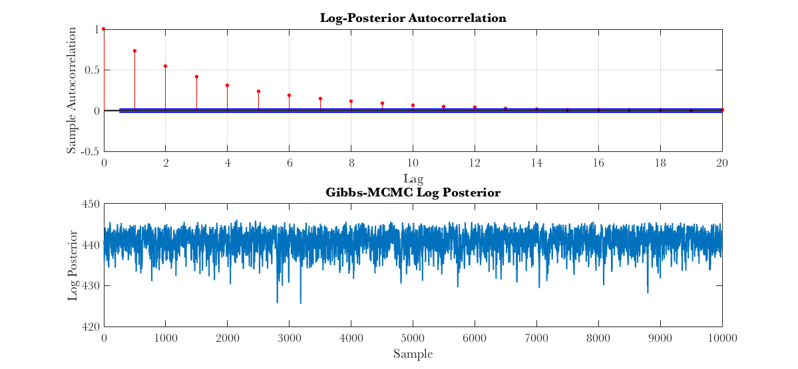
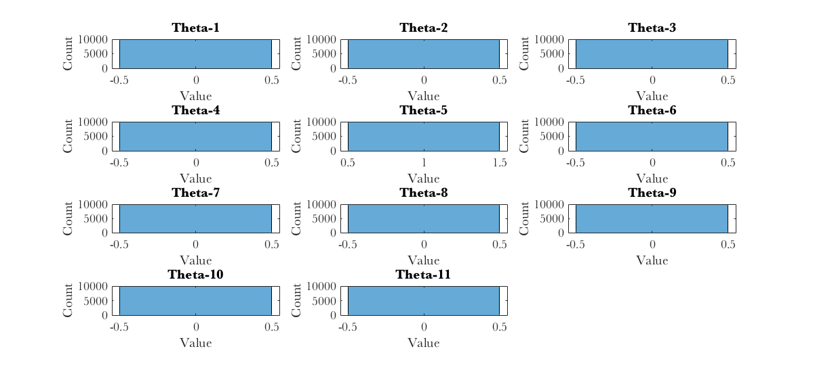

Contents
% Project5.m % Code to illustrate problems from Project 5 for the MA 589 Computational % Statistics course.
Problem 1 - Hidden Markov Model
Find the MAP estimate for the most probable sequence of hidden states under a hidden Markov model
% model given by information in project description P = [0.5,0.5,0;0.05,0.9,0.05;0,0.5,0.5]; % transition probabilities EmissionDist = [-1,0.7^2;0,0.5^2;1,0.7^2]; % emissions for each state, normal distribution start = 2; N = 200; numStates = size(P,1); % simulate from this HMM, see how well Viterbi algorithm recovers sequence % of hidden states [hiddenStates,emissions] = SimulateHMM(P,EmissionDist,N,start); [~,mapStates] = ViterbiHMM(P,EmissionDist,start,emissions); accuracy = mean(hiddenStates==mapStates); fprintf('Simulated Data: \n'); fprintf('HMM Viterbi Algorithm Accuracy: %3.2f\n\n',accuracy); stateMeans = zeros(N,1); trueStateMeans = zeros(N,1); for ii=1:N stateMeans(ii) = EmissionDist(mapStates(ii),1); trueStateMeans(ii) = EmissionDist(hiddenStates(ii),1); end figure;plot(emissions,'m.','LineWidth',4);hold on;plot(trueStateMeans,'m','LineWidth',2); plot(stateMeans,'c','LineWidth',2); title('HMM Estimation with Simulated Data');xlabel('Time Step');ylabel('Emission'); legend('Emission','True State','MAP State'); % real data fprintf('Comparative Genomic Hybridization Assay Data: \n'); data = csvread('cgh.csv',1); emissions = data(:,2); % use forwrd algorithm to compute log(P(Y)) [logProbData,logAlpha] = ForwardHMM(P,EmissionDist,start,emissions); fprintf('Log Probability of the Data: %3.2f\n',logProbData); % use Viterbi to get MAP estimate for sequence of hidden states X-hat [logProbPath,mapStates] = ViterbiHMM(P,EmissionDist,start,emissions); fprintf('Log Probability of the MAP sequence of states, given the data: %3.2f\n',logProbPath); stateNames = {'Deleted','Normal','Duplicated'}; for ii=1:numStates meanVal = mean(emissions(mapStates==ii)); fprintf('Mean log ratio of the copy number for %s state: %3.2f\n',stateNames{ii},meanVal); end stateMeans = zeros(N,1); for ii=1:N stateMeans(ii) = EmissionDist(mapStates(ii),1); end figure;plot(emissions,'m.','LineWidth',4);hold on; plot(stateMeans,'c','LineWidth',2); title('HMM Estimation, Comparative Genomic Hybridization');xlabel('Time Step'); ylabel('Emission');legend('Emission','MAP State'); % probabilities for last probe tmp = logAlpha(end,:); lastProbeNormal = exp(tmp(2)-LogSum(tmp,numStates)); fprintf('Probability last probe has normal copy number: %3.2f\n',lastProbeNormal); tmp = logAlpha(end,:); deletedDuplicated = exp(tmp(1)-tmp(3)); fprintf('%3.2f times more likely last probe in deleted than duplicated region\n',deletedDuplicated);
Simulated Data: HMM Viterbi Algorithm Accuracy: 0.90 Comparative Genomic Hybridization Assay Data: Log Probability of the Data: -196.43 Log Probability of the MAP sequence of states, given the data: -213.04 Mean log ratio of the copy number for Deleted state: -1.12 Mean log ratio of the copy number for Normal state: 0.04 Mean log ratio of the copy number for Duplicated state: 1.36 Probability last probe has normal copy number: 0.96 0.32 times more likely last probe in deleted than duplicated region

Problem 1 - Results
The Viterbi algorithm accurately recovers the sequence of hidden states for the simulated data, achieving ~90% accuracy. It does tend to miss brief jumps into the "deleted" and "duplicated" states. By comparison, randomly guessing achieves about 72% accuracy, while choosing for each hidden state the maximum probability from the forward algorithm (the most likely state, given the observations) achieves ~88% accuracy. On the actual comparative genomic hybridization assay data, we see from the plot that the model provides a good fit to the data. However, it does seem like this data differs from simulations of this model. There are two notable differences: 1) the actual data seems to stay in the two less prevalent states (deleted or duplicated) for longer than the model predicts, e.g. the probability of staying in the deleted state, given that you are already in the deleted state, seems to be higher than 0.5 in the data; and 2) the mean of the duplicated state may be higher than the model's +1. We see that the emissions (log ratio of the copy number) in the duplicated state have a mean of 1.36 and that most of the emissions in this state are greater than 1. Perhaps, for the duplicated state, the emission distribution is not normally-distributed around 1.
Problem 2 - Gibbs Sampler
Use a hybrid Gibbs sampler / MCMC technique to fit a model for human genomic data.
tmp = csvread('hla_study.csv',1); Y = tmp(:,1); X = tmp(:,2:end); p = size(X,2); N = size(Y,1); genomePos = csvread('hla_snps.csv',1,1); G = zeros(p,p); for ii=1:p for jj=1:p if ii==jj G(ii,jj) = 0; else difference = abs(genomePos(ii)-genomePos(jj)); G(ii,jj) = difference<50000; end end end [beta0,beta,theta,posterior] = MCMCGeneticModel(Y,X,G); fprintf('Posterior Mean Estimates: \n'); fprintf('Beta0: %3.2f\n\n',mean(beta0,2)); fprintf('Marker Beta Theta\n'); for ii=1:p fprintf('%2.0f %4.2f %4.2f\n',ii,mean(beta(ii,:),2),mean(theta(ii,:),2)); end fprintf('\n'); figure;subplot(2,1,1); autocorr(posterior);title('Log-Posterior Autocorrelation'); subplot(2,1,2); plot(posterior);xlabel('Sample');ylabel('Log Posterior'); title('Gibbs-MCMC Log Posterior'); figure; for ii=1:p subplot(4,3,ii);histogram(beta(ii,:)); xlabel('Value');ylabel('Count'); title(sprintf('Beta-%d',ii)); end figure; for ii=1:p subplot(4,3,ii);autocorr(beta(ii,:)); ylabel(''); title(sprintf('Beta-%d Autocorr',ii)); end figure; for ii=1:p subplot(4,3,ii);histogram(theta(ii,:)); xlabel('Value');ylabel('Count'); title(sprintf('Theta-%d',ii)); end figure; for ii=1:p subplot(4,3,ii);autocorr(theta(ii,:)); ylabel(''); title(sprintf('Theta-%d Autocorr',ii)); end % compare several chains M = 10; Variance = zeros(M,3);Estimate = zeros(M,3); for ii=1:10 [beta0,beta,theta,posterior] = MCMCGeneticModel(Y,X,G); Estimate(ii,1) = mean(beta0); Estimate(ii,2) = mean(beta(5,:)); Estimate(ii,3) = mean(posterior); Variance(ii,1) = var(beta0); Variance(ii,2) = var(beta(5,:)); Variance(ii,3) = var(posterior); end names = {'Beta0','Beta-5','Posterior'}; for jj=1:3 W = mean(Variance(:,jj)); B = var(Estimate(:,jj)); R = (((N-1)/N)*W+B)/W; fprintf('Scale Reduction Factor for %s: %3.2f\n',names{jj},R); end % effective sample sizes fprintf('\nEffective Sample Sizes (ESS): \n'); avals = autocorr(beta0,500); ESS = length(beta0)/(1+2*sum(avals)); fprintf('ESS for %d MCMC Samples of Beta0: %3.1f\n',length(beta0),ESS); avals = autocorr(beta(1,:),500); ESS = length(beta(1,:))/(1+2*sum(avals)); fprintf('ESS for %d MCMC Samples of Beta-1: %3.1f\n',length(beta(1,:)),ESS); avals = autocorr(beta(5,:),500); ESS = length(beta(7,:))/(1+2*sum(avals)); fprintf('ESS for %d MCMC Samples of Beta-5: %3.1f\n',length(beta(5,:)),ESS);
Posterior Mean Estimates: Beta0: -1.07 Marker Beta Theta 1 0.00 0.00 2 -0.00 0.00 3 0.00 0.00 4 0.00 0.00 5 2.26 1.00 6 -0.00 0.00 7 0.00 0.00 8 -0.00 0.00 9 0.00 0.00 10 0.00 0.00 11 -0.00 0.00 Scale Reduction Factor for Beta0: 0.99 Scale Reduction Factor for Beta-5: 0.99 Scale Reduction Factor for Posterior: 0.99 Effective Sample Sizes (ESS): ESS for 10000 MCMC Samples of Beta0: 629.9 ESS for 10000 MCMC Samples of Beta-1: 668.6 ESS for 10000 MCMC Samples of Beta-5: 615.6 
Problem 2 - Results
The results show that only marker number 5 (identifier: rs3819299) significantly associates with disease status. All of the MCMC samples for theta are zero for all of the markers, except for marker 5. We see from the autocorrelations and the trace of the log posterior that the hybrid Gibbs-MCMC sampler mixes fairly well, with autocorrelations decaying to 0 by about 10-20 lags. The effective sample sizes show a similar result, with values of about 500 for 10,000 samples. This means, we have an effective sample size ratio of 1 in 20. If we wanted 1,000 IID samples from the posterior, we would need to generate 20,000 samples from the sampler. The scale reduction factors are all ~1, which shows that the sampler generates similar distributions each time it runs. Changing the hyperparameters h and T does not dramatically alter the result. For h = -1000, we have the exact same result, and for h=-1, every marker now has a mean value for theta greater than 0, but only markers 3, 4, 5, 7, 9, and 10 seem have to values for beta that are different from 0. However, marker 5 still has a theta value equal to 1 and the highest magnitude for its beta value.